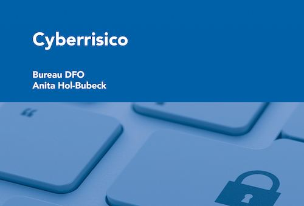
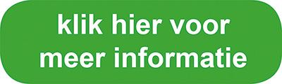

Bureau DFO Vaknotitie Cyberrisico
Schadedocent Anita Hol-Bubeck heeft op verzoek van Bureau DFO de zeer uitgebreide vaknotitie geschreven en geactualiseerd. Anita is al meer dan 30 jaar één van de, door financieel adviseurs, hoogst gewaardeerde docenten op het gebied van schadeverzekeringen.
Artikelnummer 100230. Bestellen en betalen gaat via de webshop op dfobv.nl.
Omschrijving
De vaknotitie Cyberisio is een volledig in april 2023 geactualiseerde versie van de Notitie Cyberverzekeringen.
Schadedocent Anita Hol-Bubeck heeft op verzoek van Bureau DFO de zeer uitgebreide vaknotitie geschreven en geactualiseerd. Anita is al meer dan 30 jaar één van de, door financieel adviseurs, hoogst gewaardeerde docenten op het gebied van schadeverzekeringen.
In de vaknotitie Cyberrisico is op overzichtelijke wijze informatie over cyberrisico’s, de wet- en regelgeving rondom cyberrisico, de te treffen preventiemogelijkheden en de verzekeringsmogelijkheden van cyberrisico beschreven. De informatie is geschreven voor de adviseur om te helpen cyberrisico onder de aandacht van de klant te kunnen brengen en het risico te kunnen inventariseren en analyseren om een advies uit te kunnen brengen aan de klant. In de vaknotitie zijn daarom bij veel voorbeelden van allerlei soorten cyberincidenten opgenomen.
In de vaknotitie is ook een hoofdstuk opgenomen over de risico’s die gepaard gaan met het samenwerken met zgn. verwerkers van persoonsgegevens. Welke verplichtingen stelt de AVG aan deze samenwerkingen en wat zijn op dit punt de risico’s voor de ondernemer als verwerkingsverantwoordelijke?
Naast de feitelijke vakinformatie krijgt u, via deze notitie, ook toegang tot diverse documenten van andere organisaties die over deelonderwerpen notities over dit onderwerp hebben uitgebracht waaronder:
- Actuele polisvoorwaarden relevante aanbieders cyberrisicoverzekeringen;
- Checklist voor informatiebeveiliging en voorkomen datalekken;
- Informatietekst Bureau DFO voor uw eigen nieuwsbrief of website.
Nieuw: Cyberpakket 
Voor de financieel adviseur: van mini-webinar tot vakpaper.

Passende opleidingen en masterclasses
Opleidingen van Bureau DFO
Praktijkgerichte trainingen, webinars en leergangen.
4-daagse opleiding Schade Zakelijk
Eerstvolgende: 11 mrt 2027 · Hoevelaken
Webinar Actualiteiten Schade Zakelijk
Data en locaties: zie het opleidingsportaal
Workshop Complexe aansprakelijkheidsrisico’s Zakelijk Schade
Eerstvolgende: 18 mrt 2027 · Hoevelaken